Esta guía es para vos aunque no te lleves bien con la computadora.
Está escrita paso por paso y con fotos de cada pantalla. No hace falta saber
nada de antes: alcanza con leer y seguir lo que dice cada número.
Sistema de Gestión y Reserva de Computadoras · versión 1.15
Agosto de 2026
Qué hay en esta guía
Qué es este sistema y para qué sirve Lo primero que conviene entender.
Crear tu cuenta Se hace una sola vez, y después la aprueba un Admin.
Entrar al sistema Con tu email y contraseña, o con Google.
Si te olvidaste la contraseña Se resuelve solo, con un código que llega por correo.
La pantalla de inicio El mapa de todo lo que podés hacer.
Reservar computadoras para una clase Lo que vas a hacer más seguido.
Reservar todas las semanas Una sola vez para todo el año.
Ver, cambiar y cancelar lo que reservaste
Avisar que una computadora no anda
Ver qué computadoras hay y cuándo están libres
Cómo entrar a una computadora Con qué usuario se abre cada máquina.
Los avisos Qué te avisa el sistema y dónde se lee.
Qué te llega por correo Y cómo pedir que te llegue menos.
Pedir ayuda Escribirle a los Admin desde el sistema.
Tu perfil Tu nombre, tu foto, tus materias y tu contraseña.
Quién te puede ayudar en el laboratorio
Usarlo desde el teléfono
Si algo no sale como esperabas Las dudas más comunes, respondidas.
Las palabras que vas a ver
1Qué es este sistema y para qué sirve
Antes de tocar ningún botón, conviene tener clara una sola idea.
La escuela tiene computadoras portátiles guardadas en carros. Como son
menos que los cursos que las necesitan, hay que ponerse de acuerdo en quién
las usa y cuándo. Ese acuerdo, que antes se anotaba en un cuaderno, ahora se
hace en este sistema.
Reservar es apartar unas computadoras para el día y la hora de tu
clase. Reservar no es retirarlas: el día de la clase vas al laboratorio y el
Admin te las entrega. Al terminar, las devolvés y él lo registra.
Lo único que tenés que recordar
Reservás con anticipación desde el sistema; retirás y devolvés en persona, el
día de la clase. Si no reservaste, es probable que cuando llegues las
computadoras ya estén con otro curso.
Qué más podés hacer acá
Ver qué computadoras hay y qué programas tiene cada una.
Avisar que una no anda, para que la arreglen.
Enterarte si te cancelaron una clase, y por qué.
Pedir ayuda a los Admin sin levantarte del aula.
2Crear tu cuenta
Se hace una sola vez. Después, siempre entrás con el mismo email y la misma
contraseña.
Abrí la dirección del sistema en el navegador (Chrome, Edge o el que uses).
La dirección te la da la escuela; conviene guardarla en favoritos.
Abajo de todo, donde dice ¿No tenés cuenta? Registrate, tocá Registrate.
Completá nombre, apellido, email y una contraseña.
Usá el email de la escuela, o el que usás siempre: es el que te va a servir
para entrar y el que recibe los avisos.
Elegí con qué cargo te registrás. Son dos tarjetas:
Docente, si das clase frente a alumnos, y
Administrador de Sistema, para quien administra el laboratorio sin
estar frente a alumnos —auxiliar informático, administrador de red y demás
cargos docentes—. Es obligatorio.
Elegí también si sos titular o suplente. También es obligatorio, y
va para los dos cargos.
Si elegiste Docente, abajo aparece «¿Qué vas a dictar?». No es
obligatorio, pero llenalo: elegí el año, la división y escribí la
materia.
Tocá Crear cuenta.
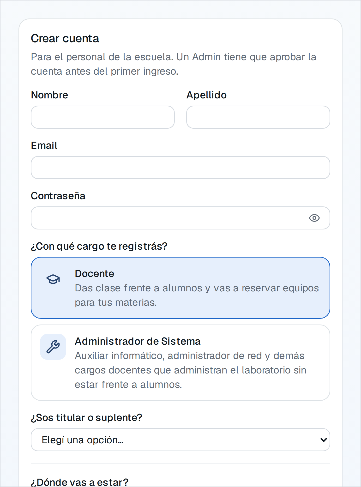
La pantalla de crear cuenta. El cargo y el titular/suplente son
obligatorios; lo de abajo es opcional, pero es lo que mira el Admin para
asignarte tu materia.
Todavía no vas a poder entrar
Una cuenta nueva queda esperando aprobación: alguien del equipo de
administración tiene que darle el visto bueno. Cuando lo haga, te llega un
correo avisándote, y recién ahí podés entrar. Si pasaron un par de días y no
llegó nada, pasá por el laboratorio y preguntá.
Por qué conviene completar «¿Qué vas a dictar?»
Para reservar hace falta estar anotado en alguna materia. Si contás cuál dictás
desde el principio, el Admin te deja listo al aprobarte y no tenés que pedirlo
después.
Si te registraste como Administrador de Sistema
El cargo que elegís acá es un dato para que el equipo de administración sepa
quién sos: no te da ningún permiso especial, y tu cuenta se aprueba igual
que cualquier otra. Si además dictás materias, las pedís desde Mi perfil
una vez que te aprueben.
3Entrar al sistema
Abrí la dirección del sistema.
Escribí tu email y tu contraseña.
Si estás en tu computadora o en tu teléfono, marcá
Mantener la sesión iniciada, la casilla que está justo arriba del
botón: durante un mes no te vuelve a pedir la contraseña.
Tocá Iniciar sesión.
No la marques en una máquina de la escuela
En una computadora que usan varios, dejar la sesión abierta significa que
el próximo que se siente entra con tu cuenta: puede pedir reservas a
tu nombre y ver tus cosas. Ahí conviene dejarla sin marcar, y tocar
Cerrar sesión al terminar. Si te olvidaste y ya te fuiste, cambiá tu
contraseña desde otro dispositivo: eso cierra todas las sesiones abiertas
de tu cuenta, en cualquier máquina.
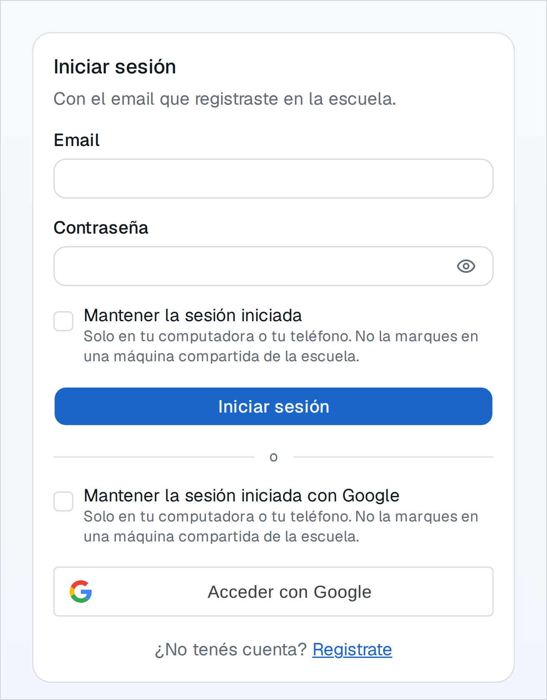
La pantalla de entrada. El botón gris de abajo sirve si tu cuenta de
la escuela es de Gmail.
Entrar con Google
Si tu cuenta de la escuela es de Gmail, podés tocar
Acceder con Google y elegir tu cuenta: no tenés que
acordarte de ninguna contraseña. Es el mismo sistema y la misma cuenta, solo
cambia la manera de entrar.
Este camino tiene su propia casilla de Mantener la sesión iniciada,
la que está abajo de la rayita que dice «o». Marcá esa si vas a entrar
con Google: la de más arriba es la del ingreso con contraseña, y marcar una
desmarca la otra. Sirve para lo mismo y con el mismo cuidado — solo en tu
computadora o en tu teléfono.
Si de golpe te pide entrar de nuevo
Las sesiones tienen fecha de vencimiento: la normal dura un día desde que
entraste, y la de Mantener la sesión iniciada, un mes. Se cuenta
desde que entraste, no desde la última vez que lo usaste. Cuando vence, el
sistema simplemente te muestra la pantalla de entrada otra vez: no pasó
nada malo, no hiciste nada mal y no perdiste ninguna reserva. Escribí tu
email y tu contraseña y seguís donde estabas.
4Si te olvidaste la contraseña
Se resuelve solo, sin molestar a nadie.
En la pantalla de entrada, tocá Olvidé mi contraseña.
Escribí tu email —el mismo con el que te registraste— y tocá
Enviarme el código.
Abrí tu correo. Vas a tener un mensaje con un código.
Volvé al sistema, escribí ese código y elegí una contraseña nueva.
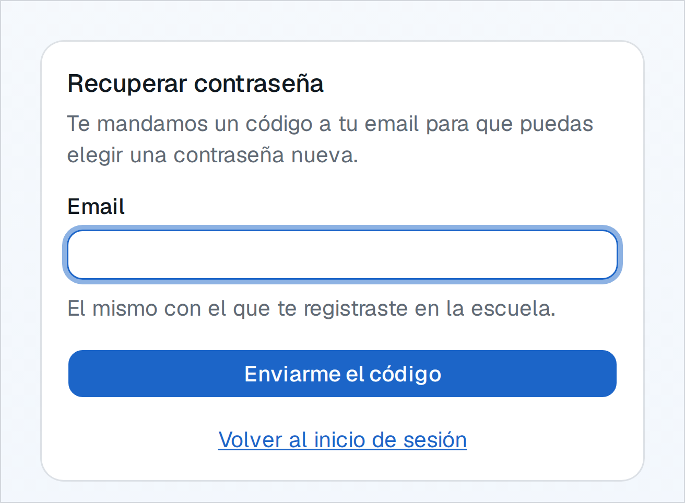
Solo hace falta tu email: el código llega ahí.
Si entrás con Google
Puede que el correo te diga que tu cuenta no tiene contraseña propia porque
entrás con Google. En ese caso no hay nada que recuperar: entrá con el botón
Acceder con Google.
Si el correo no llega
Fijate en «correo no deseado» o «spam». Si tampoco está ahí, pedile a un Admin
que te restablezca la contraseña: lo puede hacer desde el sistema en un minuto.
5La pantalla de inicio
Es lo primero que ves al entrar. Está pensada para que todo lo que necesitás
esté a la vista, sin buscar en menús.
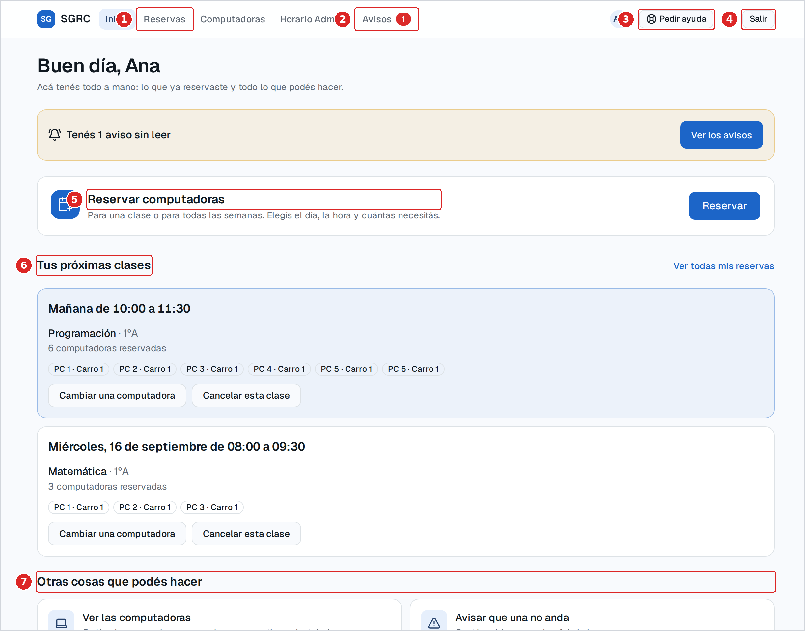
La pantalla de inicio, con cada zona señalada en rojo.
Reservas. La lista de todo lo que reservaste. También se llega desde
«Ver todas mis reservas».
Avisos. Lo que el sistema te fue avisando. El número rojo es la
cantidad sin leer.
Tu cuenta. Tocando tus iniciales entrás a tu perfil: tu foto, tus
materias y tu contraseña.
Salir. Cierra tu sesión. Conviene usarlo si la computadora es
compartida.
Reservar computadoras. El botón azul de la derecha empieza una reserva
nueva. Es lo que más vas a usar.
Tus próximas clases. Las que ya reservaste, con qué computadoras y a
qué hora. Desde acá mismo podés cambiar una máquina o cancelar.
Otras cosas que podés hacer. Accesos a todo lo demás, cada uno con una
línea que explica para qué sirve.
Si te perdés
Tocá el logo SGRC de arriba a la izquierda: siempre vuelve a esta
pantalla.
6Reservar computadoras para una clase
Es lo que vas a hacer más seguido. Son seis pasos.
En la pantalla de inicio, tocá el botón azul Reservar.
Dejá elegido Una sola fecha (viene así). El otro
botón es para las clases que se repiten todas las semanas: eso está en el
capítulo siguiente.
En Materia, elegí para qué materia y curso es la clase.
En Fecha, elegí el día.
Elegí la hora de inicio y la hora de fin. Van en formato de 24
horas: las dos de la tarde son las 14, no las 2.
Abajo aparecen las computadoras que están libres ese día a esa hora.
Tildá las que necesitás y tocá
Confirmar reserva.
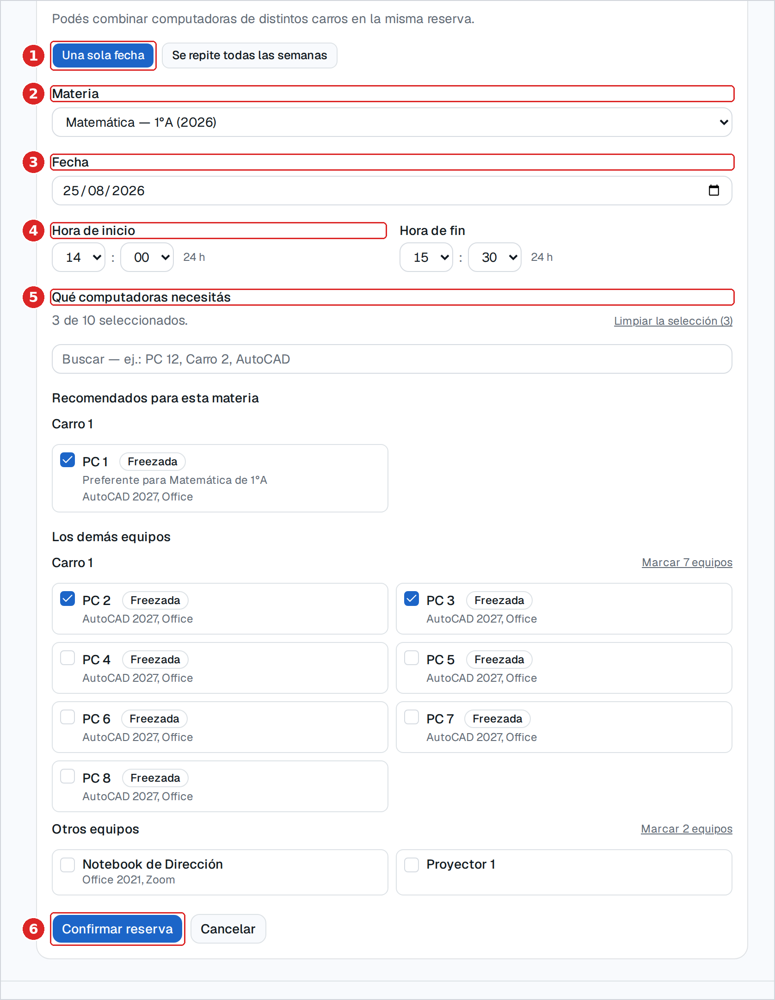
El formulario completo, con tres computadoras tildadas y listo para
confirmar.
Una sola fecha o todas las semanas.
La materia y el curso.
El día.
Desde qué hora hasta qué hora.
Las computadoras libres. Tildás las que querés; arriba te dice cuántas
llevás elegidas.
El botón para confirmar. Hasta que no completes todo lo anterior está
apagado, y el texto de al lado te dice qué falta.
Podés mezclar carros
Si en un carro no quedan suficientes máquinas libres, tildá las que falten de
otro carro: entran todas en la misma reserva. En la lista, cada computadora dice
a qué carro pertenece.
Cómo sabés que quedó
Después de confirmar, la reserva aparece en Reservas y también en «Tus
próximas clases», en la pantalla de inicio.
Si no aparece ninguna computadora
Puede ser por dos motivos. Uno: ya están todas tomadas en ese horario —el
sistema te muestra quién las tiene, así que podés hablarlo con esa persona—.
Dos: el horario que elegiste cae fuera del horario en que la escuela está
abierta. Probá con otra hora o preguntá en el laboratorio.
7Reservar todas las semanas
Si tenés la misma clase todas las semanas, no hace falta cargarla una por una.
Empezá una reserva nueva y tocá
Se repite todas las semanas.
Elegí la materia y el día de la semana (por ejemplo, todos los
martes).
Elegí desde qué fecha hasta qué fecha: por ejemplo, desde hoy hasta
que termine el año.
Elegí el horario y tildá las computadoras.
Confirmá.
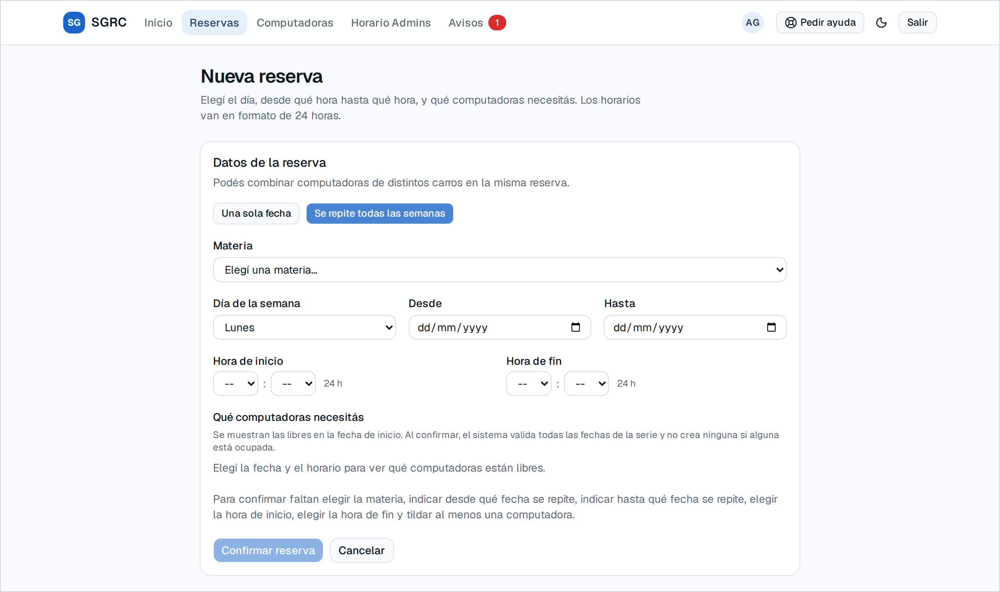
La reserva semanal pide, además, entre qué fechas se repite.
Después podés tocar una sola clase
Si una semana no vas a dar la clase, cancelás solo esa fecha y las demás
quedan en pie. Lo ves en el capítulo 8.
8Ver, cambiar y cancelar lo que reservaste
Todo junto está en Reservas, arriba a la izquierda.
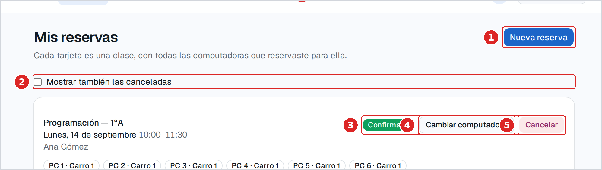
Cada tarjeta es una clase.
Empezar una reserva nueva.
Ver también las que ya cancelaste (normalmente no se muestran).
El estado de la clase. Confirmada quiere decir que está todo bien.
Cambiar una de las computadoras por otra.
Cancelar esa clase.
Cambiar una computadora
Sirve cuando una máquina puntual no te sirve —por ejemplo, la que reservaste
no tiene el programa que necesitás—. La clase queda igual: no se cancela ni
hay que volver a reservar.
Tocá Cambiar computadora en esa clase.
En ¿Cuál cambiás? elegí la que querés soltar.
En ¿Por cuál? elegí una de las que están libres en ese mismo horario.
Tocá Cambiar.
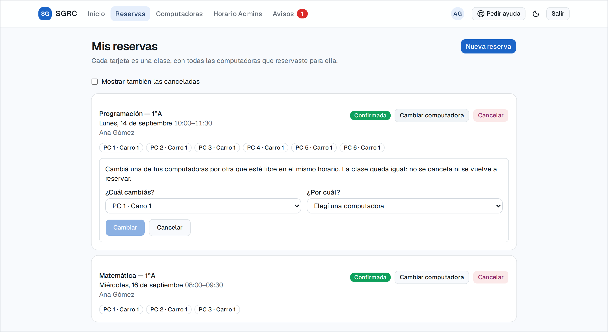
Solo aparecen las computadoras que están libres en ese horario.
Cancelar una clase
Tocá Cancelar en la clase que no vas a dar.
Si querés, escribí el motivo. Es opcional, pero ayuda al que después
mira el historial.
Si la clase se repite todas las semanas, elegí si cancelás
solo esa fecha o esa y todas las siguientes.
Tocá Confirmar cancelación.
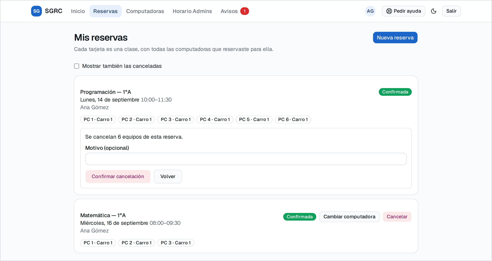
Antes de cancelar, el sistema te dice cuántas computadoras se liberan.
Cancelar es para la clase entera
Al cancelar se sueltan todas las computadoras de esa clase, no una sola.
Si lo que querés es quedarte con menos máquinas, tenés dos caminos: cambiar la
que no vas a usar por otra, o cancelar la clase y volver a reservarla con la
cantidad que necesitás.
Cancelá apenas lo sepas
Una computadora que soltás vuelve a la lista de libres y otro docente la puede
usar. Cancelar a tiempo es lo que hace que el sistema le sirva a todos.
9Avisar que una computadora no anda
Si una máquina no enciende, se apaga sola, no tiene el programa o le falta
algo, contalo acá. Los Admin lo ven y queda registrado.
En la pantalla de inicio, tocá Avisar que una no anda.
Elegí cuál es, de la lista.
Contá qué le pasa, con tus palabras. No hace falta que sepas de
computadoras: «aprieto el botón y no prende» es una descripción perfecta.
Elegí qué tan grave es y mandalo.
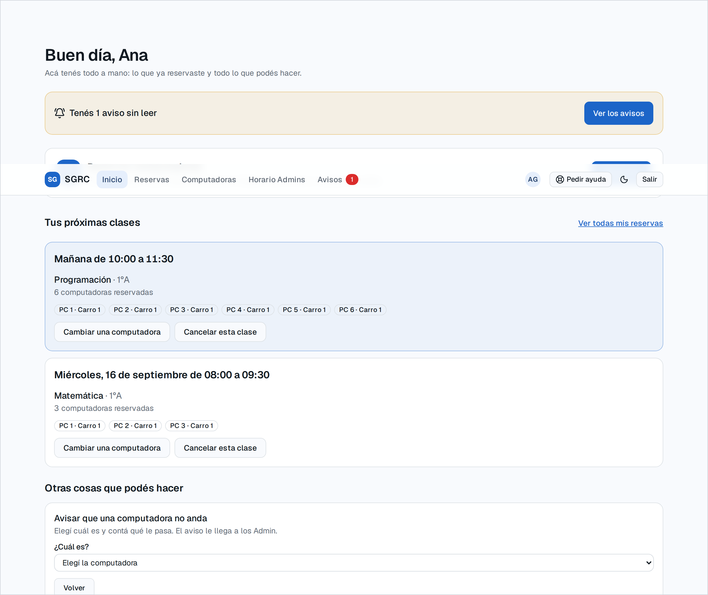
Cuanto más concreto, mejor: qué hiciste y qué pasó.
Qué pasa después
El aviso queda cargado en esa computadora. Si la falla es seria, un Admin la
saca de circulación para que nadie la reserve hasta arreglarla.
10Ver qué computadoras hay
En Computadoras, arriba, está todo el equipamiento de la escuela.
Tocá Computadoras en la barra de arriba.
Tocá Ver equipos en el carro que te interese.
Vas a ver cada máquina con los programas que tiene instalados y su estado.
Cada máquina tiene su botón Ver calendario: ahí
ves qué días y horas está reservada, y por quién.
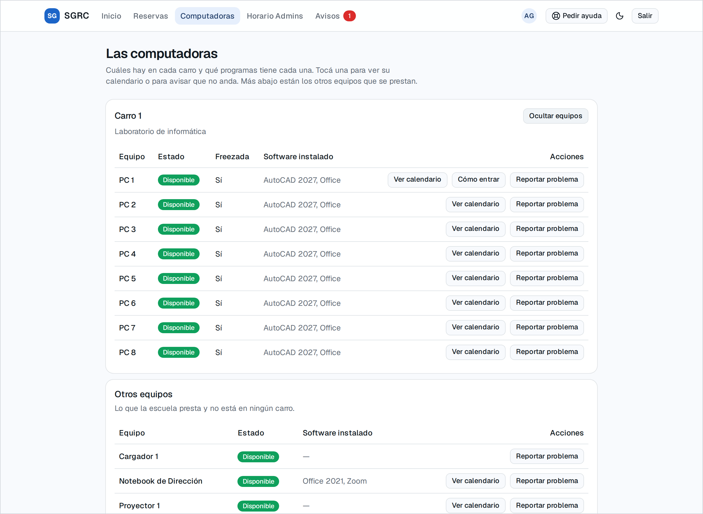
Cada máquina, con sus programas y su estado.
Para qué te sirve el calendario
Si necesitás una máquina puntual —la única que tiene cierto programa— podés
mirar cuándo está libre antes de armar tu reserva.
Cómo se lee el calendario de una computadora
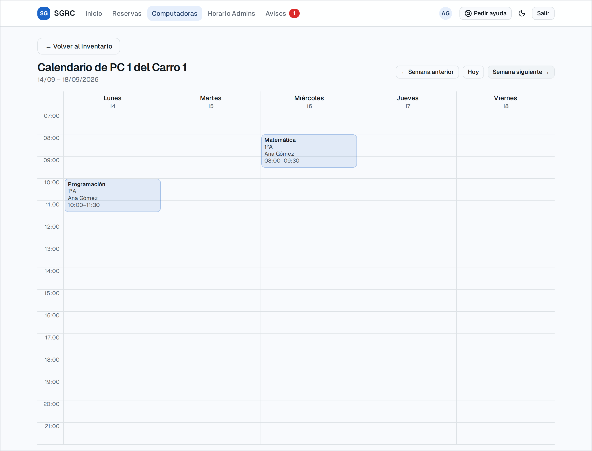
Una semana completa de una sola máquina, hora por hora.
En azul están las clases reservadas, con la materia.
En rojo, los ratos en que un Admin bloqueó esa máquina para otra cosa
—una evaluación, una capacitación—, con el motivo.
Los huecos en blanco están libres: ahí podés reservar.
Con ← Semana anterior y
Semana siguiente → te movés de semana, y
Hoy te trae de vuelta. Para volver al listado,
Volver al inventario.
11Cómo entrar a una computadora
Una notebook no se abre sola: hay que saber con qué usuario entrar. Si el
equipo de administración lo anotó, lo tenés acá y no hace falta llamar a
nadie.
Tocá Computadoras en la barra de arriba.
Tocá Ver equipos en el carro donde esté la
máquina.
En la fila de esa máquina, tocá Cómo entrar.
Debajo de la lista se abre lo que hay anotado para esa computadora.
Si no ves ese botón
Es que de esa máquina todavía no hay nada anotado. Tampoco aparece en un
cargador o en cosas parecidas, que no tienen con qué entrar. No está
fallando: no hay nada que mostrar.
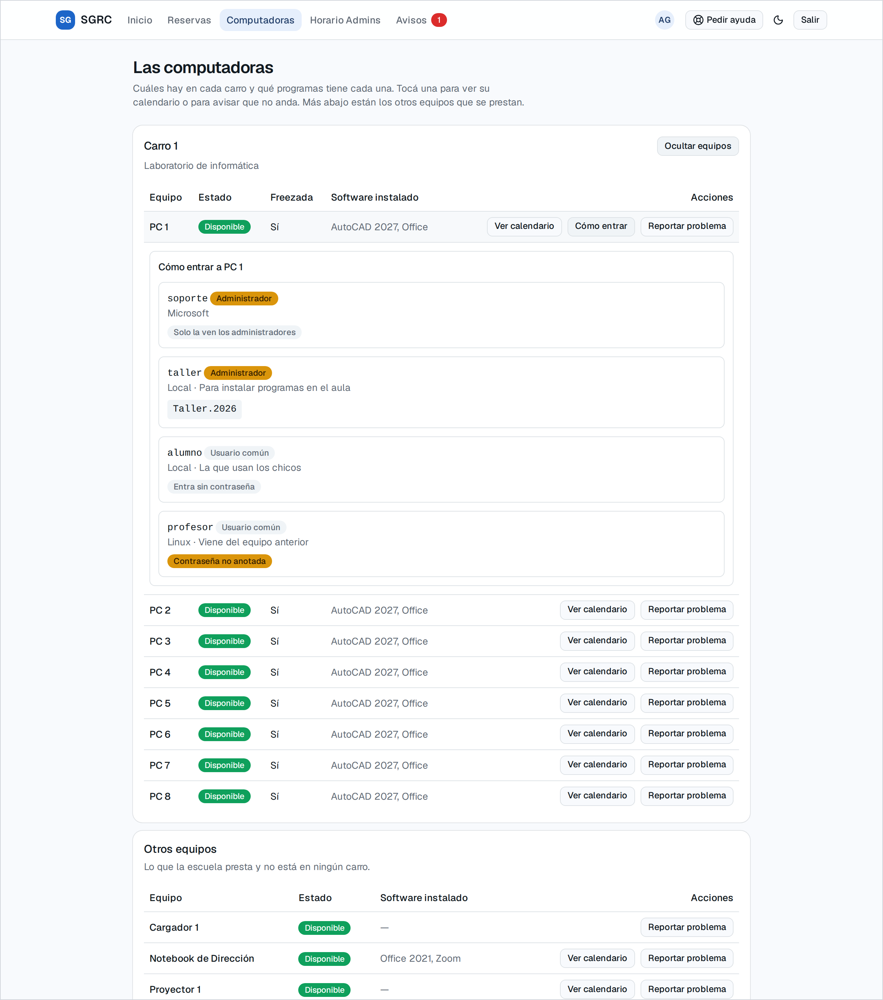
Cada cuenta, con lo que hace falta saber para sentarse a usar la máquina.
Qué dice cada cuenta
El nombre de usuario, grande y en letra de máquina: es lo que
tenés que tipear tal cual, respetando mayúsculas.
Si dice Administrador, esa cuenta puede instalar programas y
cambiar cosas del sistema. Usuario común es la de todos los días.
Debajo, de qué tipo es la cuenta —Local, Microsoft, Linux— y las notas
que haya dejado el equipo de administración.
Y sobre la contraseña, cuatro situaciones
Entra sin contraseña: te sentás y usás la máquina.
Aparece el botón Ver contraseña: tocalo y la
contraseña se muestra ahí mismo.
Solo la ven los administradores: esa cuenta existe y sabemos su
contraseña, pero no es de las que se reparten. Si la necesitás, pedila en
el laboratorio.
Contraseña no anotada: la máquina pide una y en el sistema no
está cargada. Avisá en el laboratorio para que la anoten.
La contraseña se muestra de a una y queda registrado
Cada vez que alguien toca Ver contraseña, el
sistema lo anota. No es para controlarte: es lo que permite saber quién
tuvo acceso a qué si alguna vez hay que revisarlo. Usalas para tu clase y
no las pases por escrito a nadie.
Desde el teléfono, que es donde más sirve
Esta pantalla está pensada para mirarla parado frente a la máquina. Entrás
desde el teléfono igual que desde una computadora y se ve así:
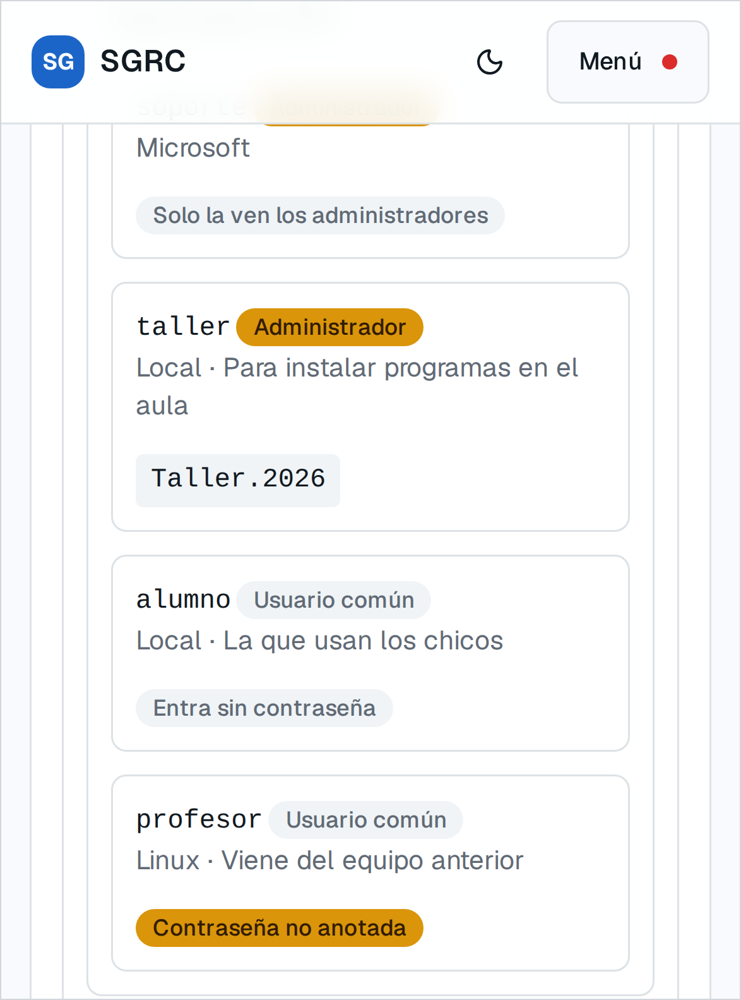
Lo mismo en el teléfono, sin tener que agrandar nada.
Vos no las podés cambiar
Anotar, corregir o borrar cuentas lo hace el equipo de administración. Si
lo que dice acá no coincide con la máquina —cambió la contraseña, la cuenta
ya no existe— avisá con Pedir ayuda y lo corrigen.
12Los avisos
El sistema te avisa lo que te afecta: que te cancelaron una clase, que una
computadora que reservaste puede no estar, que alguien te contestó.
Tocá Avisos en la barra de arriba. El número rojo es lo que tenés sin
leer.
Leé el aviso. Cada uno cuenta qué pasó y, si corresponde, el motivo.
Tocá Marcar como leída para sacarlo de la lista, o
Marcar todas como leídas si querés limpiar todo.
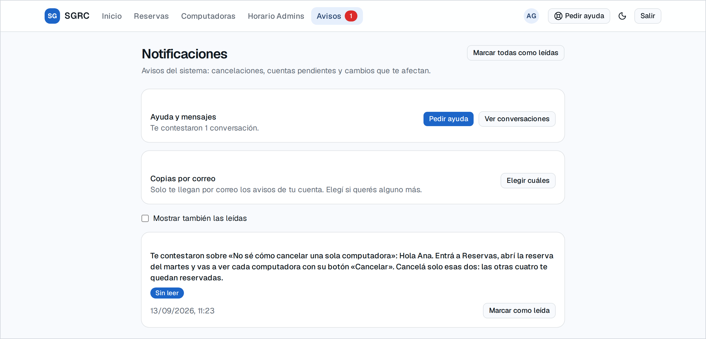
Los avisos sin leer quedan primero. Tildando «Mostrar también las
leídas» aparecen los viejos.
Los avisos no se pierden
Aunque apagues los correos (capítulo 13), todos los avisos siguen
apareciendo acá. Lo que se elige es si además te llegan por mail, no si te
enterás.
13Qué te llega por correo
Si te llegan demasiados correos, podés elegir cuáles querés recibir. Los demás
los seguís viendo dentro del sistema.
Entrá a Avisos.
Buscá el recuadro Copias por correo y tocá
Elegir cuáles.
Destildá los que no querés recibir por mail y tildá los que sí.
Guardá.
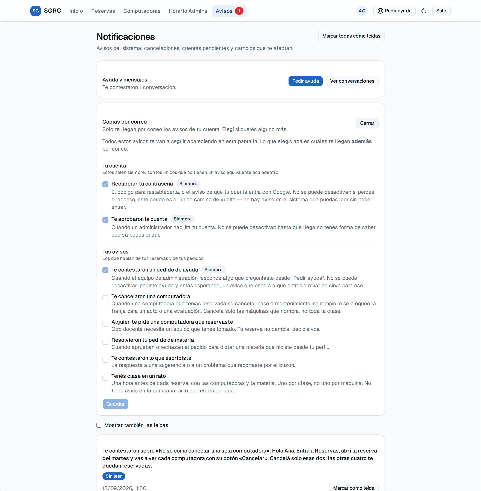
Cada renglón explica de qué avisa ese correo.
Hay tres que no se pueden apagar
El código para recuperar tu contraseña, el aviso de que aprobaron tu cuenta y
las respuestas a tus pedidos de ayuda llegan siempre. Los dos primeros porque
no están en ningún otro lado; el tercero porque del otro lado hay alguien
esperando que le contestes.
14Pedir ayuda
Si algo no te sale, no anda o se te ocurre una mejora, escribilo desde acá. Le
llega al equipo de administración y te contestan por el mismo lugar.
Tocá Pedir ayuda, arriba a la derecha. Está en
todas las pantallas.
Elegí de qué se trata: Pedido de ayuda (necesitás una mano ahora),
Algo no anda (algo del sistema falla) o Una idea (una sugerencia).
Escribí un título corto y después contá con tus palabras qué querías hacer y
qué pasó.
Tocá Mandar.
No hace falta que sepas por qué pasa
Con contar qué querías hacer y qué viste alcanza. Del otro lado se ocupan de
averiguar el resto.
Seguir la conversación
Cuando te contestan, te llega un correo y además lo ves en Avisos. La
respuesta no cierra el tema: podés seguir escribiendo si no se resolvió, y la
conversación queda completa en un solo lugar.
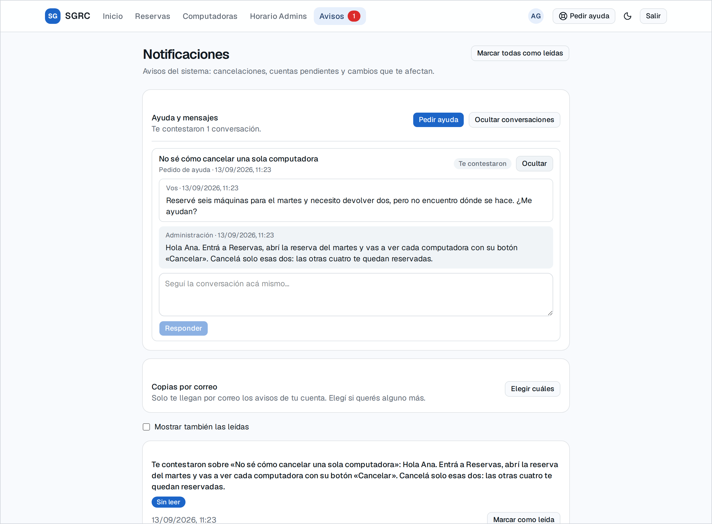
Tu mensaje y la respuesta, uno abajo del otro. Abajo escribís de nuevo
si hace falta.
15Tu perfil
Se llega tocando tus iniciales, arriba a la derecha. Ahí están tu nombre, tu
foto, las materias que dictás y tu contraseña.
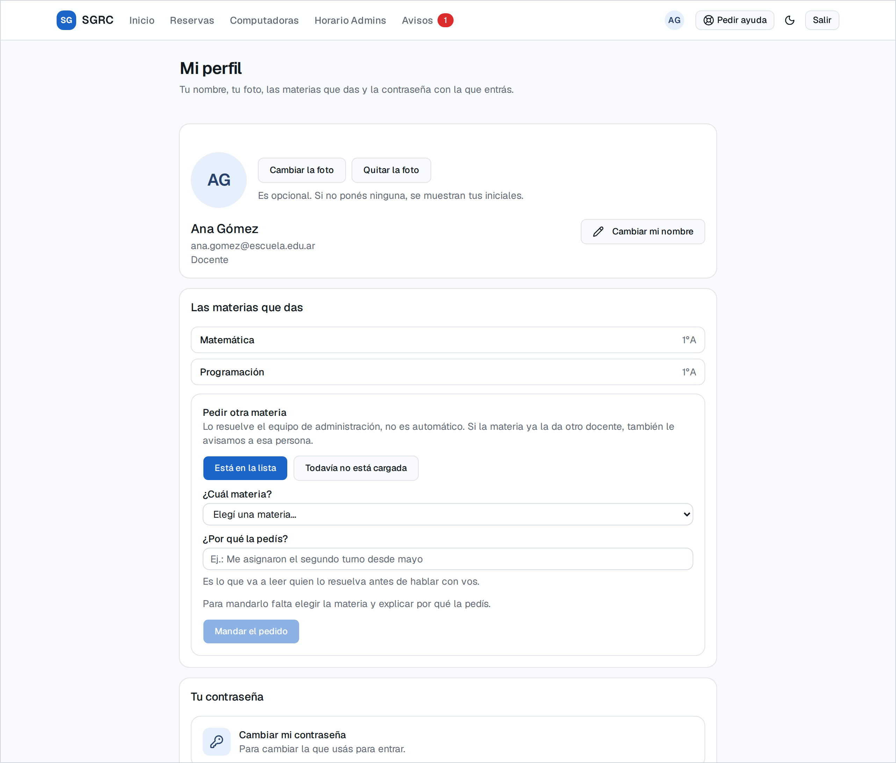
Todo lo tuyo, en una sola pantalla.
Tu nombre
Si tu nombre o tu apellido quedaron mal escritos cuando creaste la cuenta, los
corregís vos: tocá Cambiar mi nombre, escribilos bien
y guardá. No hace falta pedírselo a nadie.
Es el nombre que aparece en tus reservas, así que conviene que esté bien: es lo
que ve quien te entrega las computadoras en el laboratorio.
El email no se cambia
Tu dirección de correo es con la que entrás, y esa queda fija. Si de verdad
necesitás cambiarla, pedíselo a un Admin.
Tu foto
Es opcional. Si no ponés ninguna, se muestran tus iniciales. Sirve para que en
el laboratorio te reconozcan al entregarte las máquinas.
Las materias que das
Son las materias para las que podés reservar. Si te falta una, tocá
Pedir otra materia: elegís la materia de la lista —o contás cuál es, si
todavía no está cargada—, explicás por qué la pedís y mandás el pedido. Lo
resuelve una persona, no es automático, y si esa materia ya la da otro docente,
a esa persona también le avisan.
Cambiar tu contraseña
En tu perfil, tocá Cambiar mi contraseña.
Escribí la contraseña que usás hoy.
Escribí la nueva y confirmá.
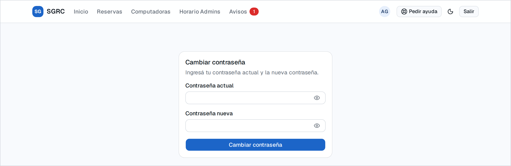
Hace falta la actual: es lo que impide que otro te la cambie si dejaste
la sesión abierta.
16Quién te puede ayudar en el laboratorio
En Horario Admins ves en qué días y horarios está cada Admin.
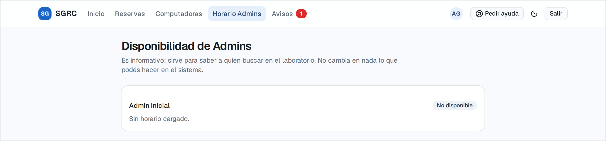
Es informativo: sirve para saber a quién buscar y cuándo.
Esta pantalla no cambia nada de lo que podés hacer en el sistema. Está para que
no camines hasta el laboratorio en un horario en el que no hay nadie.
17Usarlo desde el teléfono
El sistema anda igual en el celular. Es la misma dirección y la misma cuenta.
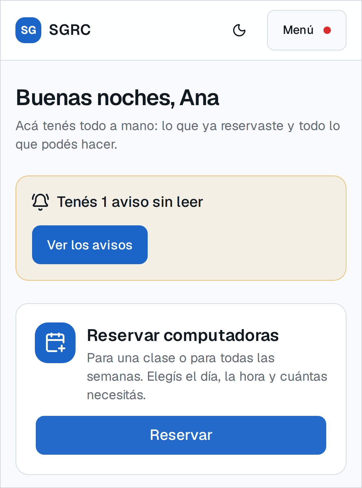
En el teléfono, el menú se abre con el botón Menú, arriba a la derecha.
Todo lo que hacés en la computadora lo podés hacer en el teléfono.
Los enlaces de arriba se guardan detrás del botón Menú, arriba a la derecha. El puntito rojo avisa que tenés algo sin leer.
Conviene guardar la dirección en la pantalla de inicio del teléfono, así la
tenés como si fuera una aplicación.
18Si algo no sale como esperabas
No puedo entrar: dice que el email o la contraseña no son correctos
Fijate que el email esté completo y sin espacios. Si estás seguro de la
contraseña, puede que tu cuenta todavía no esté aprobada, o que hayas entrado
siempre con el botón de Google. Si no, usá «Olvidé mi contraseña».
Creé la cuenta pero no me deja entrar
Falta que un Admin la apruebe. Te va a llegar un correo cuando lo haga.
Al reservar no me aparece ninguna materia
Quiere decir que todavía no estás anotado en ninguna. Entrá a tu perfil y usá
Pedir otra materia, o pasá por el laboratorio.
Elegí día y hora y no aparece ninguna computadora libre
O están todas tomadas en ese horario —el sistema te muestra quién las tiene—,
o la hora que pusiste queda fuera del horario en que abre la escuela. Probá
corriendo el horario.
Me cancelaron una clase que había reservado
Vas a tener un aviso con el motivo, y también un correo. Pasa por dos razones
distintas. La más común es que el laboratorio necesite las máquinas para otra
cosa —una evaluación, una jornada docente, un mantenimiento—.
La otra es que la escuela haya cambiado su horario de apertura y tu clase
quede fuera del horario nuevo. En ese caso el motivo lo dice con esas palabras.
Ojo con esto: la reserva se cancela entera, no se le recorta el pedazo que
sobra. Si tenías de 13:00 a 16:00 y la escuela ahora cierra a las 15:00, perdés
las tres horas y podés volver a reservar de 13:00 a 15:00.
Si ya habías retirado las computadoras, seguí teniéndolas: el préstamo no
se cancela y las devolvés como siempre.
Si te deja sin clase, escribí por Pedir ayuda.
Reservé y al final no fui a buscar las computadoras
Pasado un rato, el sistema las libera solo para que otro las pueda usar, y
queda registrado que no se retiraron. No es una sanción, pero conviene cancelar
cuando sabés que no vas a ir.
Necesito más computadoras de las que reservé
No se le agregan máquinas a una reserva hecha. Cancelala y hacé una nueva con
la cantidad que necesitás; si las querés asegurar, hacelo cuanto antes.
Me equivoqué en el horario
Cancelá esa clase y reservá de nuevo con el horario correcto.
Toqué algo y no sé qué hice
Ninguna pantalla borra nada sin preguntar antes. Tocá el logo SGRC para
volver al principio y, si quedaste con la duda, escribí por
Pedir ayuda: preguntar no molesta a nadie.
19Las palabras que vas a ver
Carro
El mueble con ruedas donde se guardan y se cargan las computadoras. Cada
carro tiene un nombre y adentro varias máquinas numeradas.
Equipo
Cualquier cosa que se preste: una computadora, un proyector, un cargador.
La mayoría son computadoras.
Reserva
Apartar computadoras para una materia, un día y un horario. No implica
tenerlas en la mano: eso es la entrega.
Entrega y devolución
El momento en que el Admin te da las máquinas en el laboratorio y el momento
en que las devolvés. Queda registrado en el sistema.
Bloqueo
Cuando el laboratorio toma computadoras para otra cosa —una evaluación, una
jornada— y eso cancela las reservas que se pisan. Siempre viene con un motivo.
Incidencia
El aviso de que una computadora no anda. Es lo que cargás desde «Avisar que
una no anda».
Licencia
El permiso para usar un programa, que vence y hay que renovar. Lo maneja el
equipo de administración; a vos te importa solo si un programa deja de andar.
Cuenta de una computadora
Con qué usuario se entra a esa máquina. No es tu cuenta del sistema: son
dos cosas distintas y vas a usar las dos.
Admin
La persona del equipo de administración del laboratorio: aprueba cuentas,
entrega las máquinas y contesta los pedidos de ayuda.
Una última cosa
Si después de leer esto te queda una duda, escribila por
Pedir ayuda. Las preguntas que se repiten son las que hacen que la próxima
versión de esta guía sea mejor.